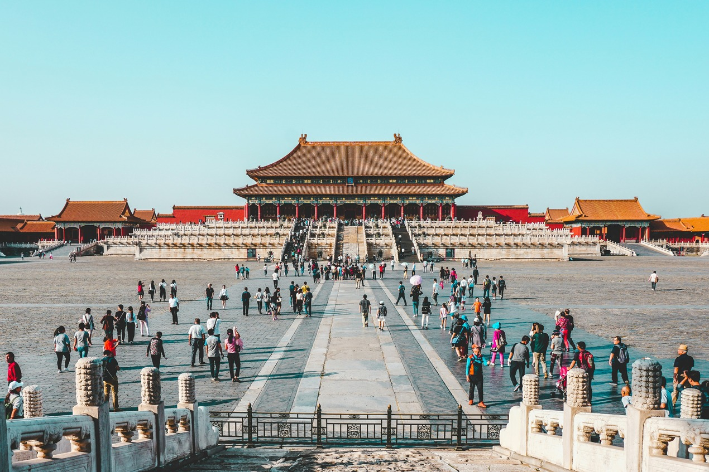

https://images.unsplash.com/photo-1547981609-4b6bfe67ca0b?q=80&w=1740&auto=format&fit=crop&ixlib=rb-4.1.0&ixid=M3wxMjA3fDB8MHxwaG90by1wYWdlfHx8fGVufDB8fHx8fA%3D%3D
Peking ist die Hauptstadt Chinas und liegt rund 150 Kilometer vom Golf von Bohai entfernt. Die Stadt befindet sich in einer Tiefebene am Mongolischen Plateau und ist von Bergen umgeben. Der höchste Berg in der Region ist der Ling Shan mit 2303 Metern. Peking hat rund 21,5 Millionen Einwohner.